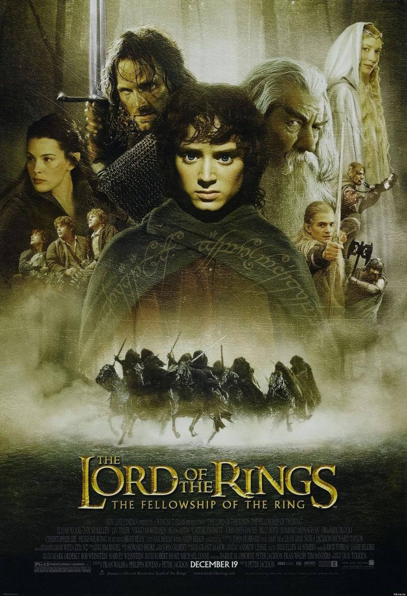

Pel·lículaEl Senyor dels Anells: La Germandat de l'Anell
El jove hobbit Frodo rep l'Anell Únic, una arma que podria sotmetre el món a la voluntat de Sauron. Acompanyat per una Germandat de nou companys —mags, elfs, nanos i homes—, emprenderà un viatge per destruir-lo al foc del Mont del Destí abans que el Senyor Fosc el recuperi.
IMDb 8,9 ↗